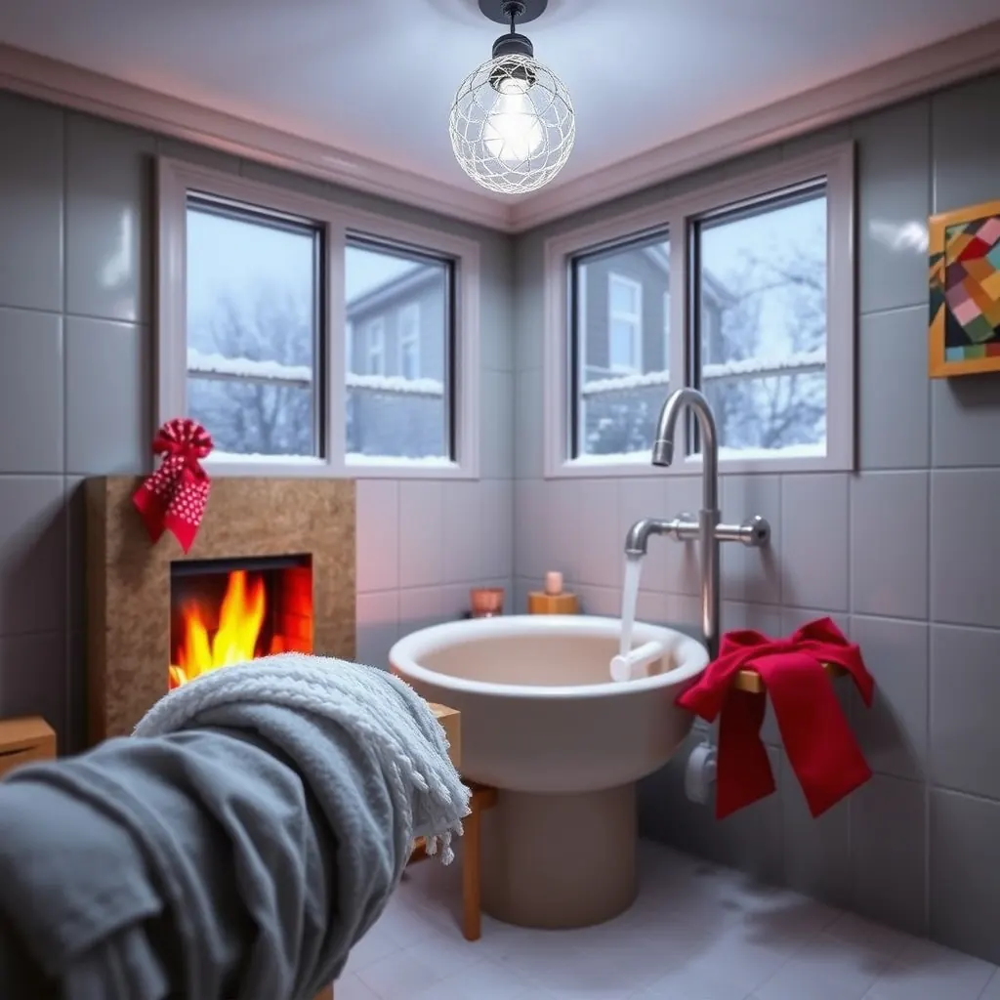
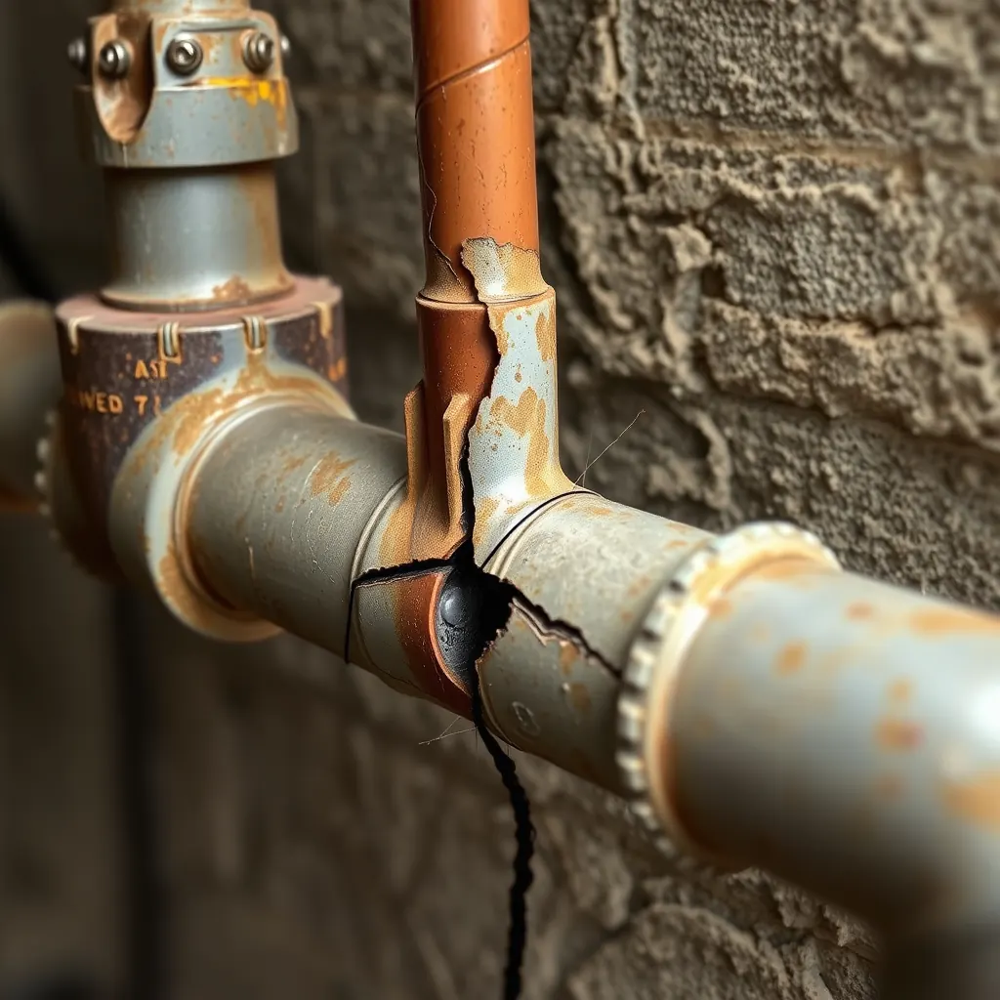

As the crisp autumn air gives way to the deep chill of winter, most of us are thinking about holiday cheer, warm blankets, and cozy fires. What we often don't think about is our home's plumbing—until it's too late.

It might seem counterintuitive, but those cooler temperatures are the primary reason a small, hidden plumbing issue can turn into a major, sudden disaster. This winter, Angle Stop Plumbing is here to equip you with the knowledge and the service to minimize those unwelcome surprises.
The Big Reveal: Why Cold Weather Exposes Plumbing Weaknesses
Plumbing systems are under stress year-round, but winter conditions act like a relentless detective, exposing every weak point that was lurking quietly during the warmer months.
Here’s why a tiny pinhole leak or a worn joint is far more likely to make its presence known when the thermostat drops:
1. The Power of Ice Expansion
This is the most well-known culprit. Water is one of the few substances that expands as it freezes. When the temperature dips below $32^\circ F$ ($0^\circ C$), water trapped inside pipes—especially those in unheated areas like crawl spaces, attics, or exterior walls—turns to ice.
- The Freeze: The expanding ice creates immense pressure—far exceeding the stress rating of most pipes, even durable metal ones.
- The Crack: This pressure causes pipes to crack or, in the worst cases, completely burst.
- The Leak: Once the ice block thaws, water rushes through the newly formed crack, resulting in a sudden, catastrophic leak or flood. What might have been a slow drip is now a gusher.

2. Thermal Contraction and Weakened Joints
While ice expansion is dramatic, subtle forces are at play, too. As pipes and fittings are constantly exposed to temperature fluctuations, they undergo thermal contraction (shrinking) in the cold.
- Weakening the Seals: This constant movement puts stress on the connection points and seals. If a joint was already worn or a pipe was improperly fitted, the contraction of the material in the cold can create or widen a gap.
- Instant Visibility: In warmer weather, the material might be slightly expanded, keeping the crack closed. Once it contracts in the cold, that tiny gap is exposed, and the leak begins or accelerates.
3. Increased Strain on the Water Heater
Winter makes your water heater work overtime, bringing significantly colder water up to temperature.
- Higher Pressure: This increased demand for hot water and the temperature differential can put extra pressure on your hot water lines. If any line has corrosion or an existing weak spot, the extra stress from the demanding winter workload can push it past its breaking point, leading to a surprise leak.
Angle Stop Plumbing: Your Proactive Winter Defense
A sudden burst pipe in the middle of winter is not just an inconvenience; it can mean thousands of dollars in water damage, mold remediation, and displacement from your home. This is where a proactive approach with Angle Stop Plumbing pays for itself tenfold.
We believe the best way to handle a winter plumbing disaster is to prevent it from ever happening.
Our Winter Leak Prevention Services:
- Whole-Home Plumbing Inspections: Our certified technicians use specialized equipment, like infrared cameras and moisture meters, to scan walls, floors, and ceilings. This allows us to detect the slow, hidden leaks and areas of high moisture concentration that are already developing but haven't burst yet. We find the weaknesses before the deep freeze exposes them.
- Pipe Insulation and Protection: We can assess and professionally insulate your most vulnerable pipes—those in attics, crawl spaces, garages, and near exterior walls—to create a critical barrier against freezing temperatures.
- Exterior Faucet Winterization: We ensure your outdoor hose bibbs are properly drained and shut off from the inside supply line, preventing one of the most common—and often unnoticed—causes of spring water damage.
- Smart Leak Detection System Installation: For the ultimate peace of mind, we install whole-house auto-shutoff leak detection systems. These devices monitor water flow 24/7 and, in the event of an unusual leak (like a burst pipe), they automatically shut off the main water supply to your home, mitigating damage in a matter of seconds.
Don't wait for a drop in temperature to reveal a devastating leak. Let the professionals at Angle Stop Plumbing provide the peace of mind you deserve this winter. Schedule your comprehensive Winter Plumbing Inspection today and defend your home against the cold.